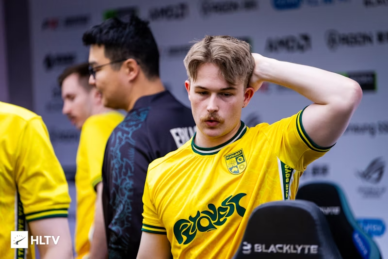
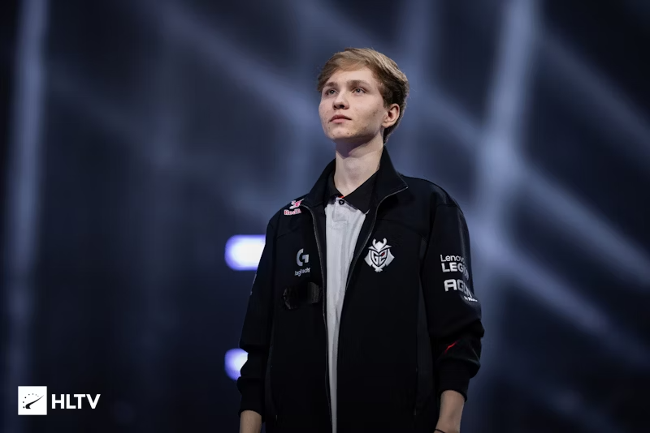
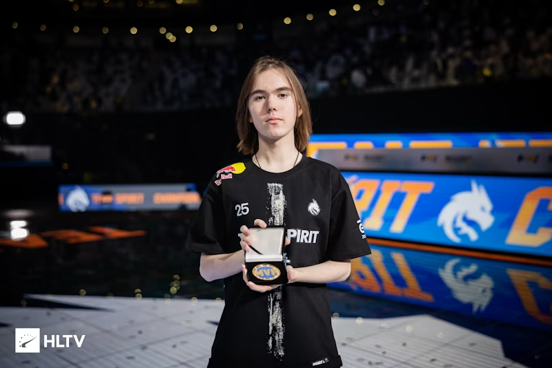
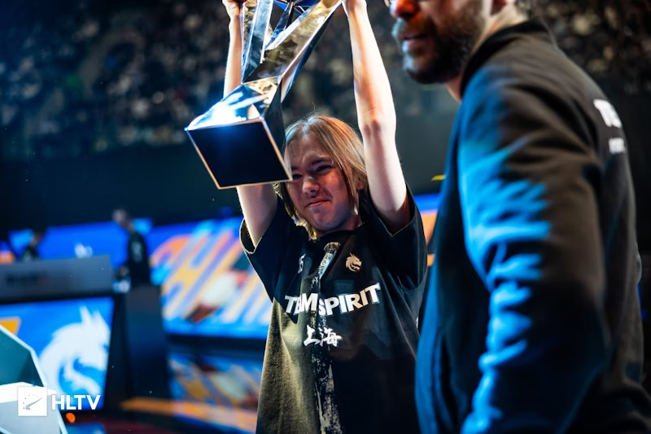

FlyQuest mettent sur le banc aliStair
FlyQuest a annoncé qu'elle avait décidé de mettre sur la touche Alistair « aliStair » Johnston.
Il s'agit du premier changement au sein de l'équipe Oceanic depuis qu'elle a rejoint l'organisation nord-américaine en mars 2024.
Avec la mise sur le banc d'aliStair, l'équipe australienne est maintenant à la recherche d'un nouveau sniper
En savoir plus

m0NESY devrait rester à G2 malgré l'intérêt des Falcons
Ilya « m0NESY » Osipov devrait rester à G2, au moins pour la première moitié de l'année 2025,
ont indiqué plusieurs sources à HLTV et au journaliste indépendant Guillaume Rathier. Cela intervient malgré un fort intérêt pour l'AWPer russe
de la part des Falcons, qui devraient finaliser la signature de Nikola « NiKo » Kovač.
En savoir plus

donk devient le plus jeune et le plus titré des MVP majeurs à Shanghai
« Même si je suis le 150e meilleur joueur du monde, si mon équipe gagne, je serai heureux », a déclaré le prodige russe
.
En savoir plus

donk sur le prix POTY : « Il devrait être décerné à celui qui présente des résultats stables tout au long de l'année ; j'ai échoué lors de deux événements."
Le jeune homme de 17 ans a mené Spirit à une victoire 2-1 en grande finale avec une note de 1,67 (c'est monstrueux, 1 c'est la moyenne des professionnels).
En savoir plus